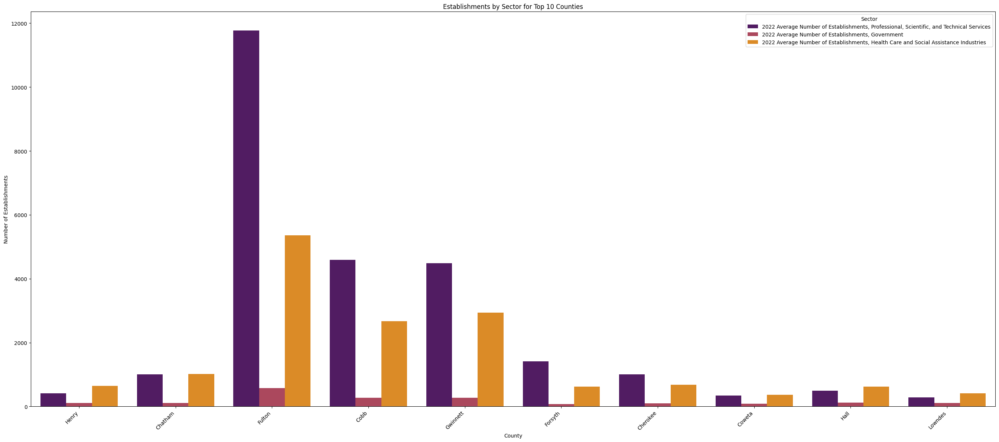
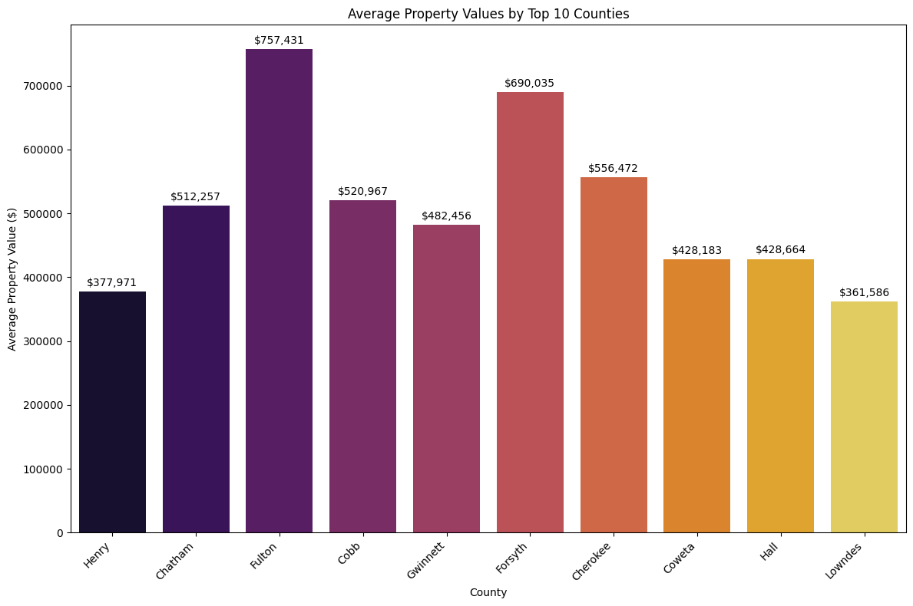

Counties with a higher number of technical or government jobs will have higher property values


Methodology
- The first graph shows the number of establishments for each of the top ten counties.
- Purple represents Science and tech establishments. Maroon represents government jobs. Orange represents healthcare establishments.
- Created second graph to display average property value per county.